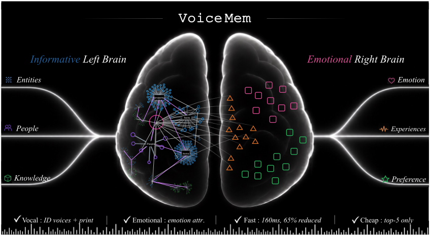
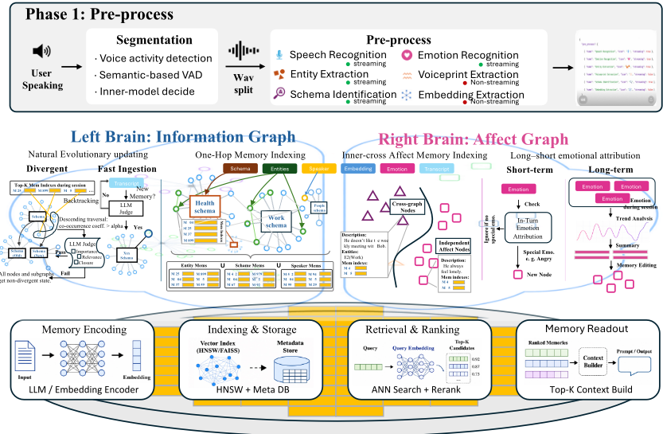
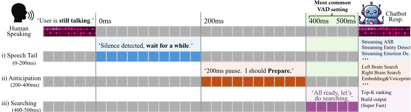
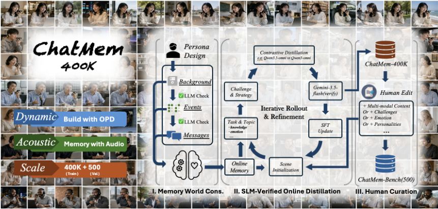
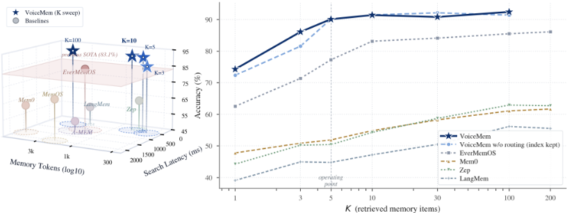
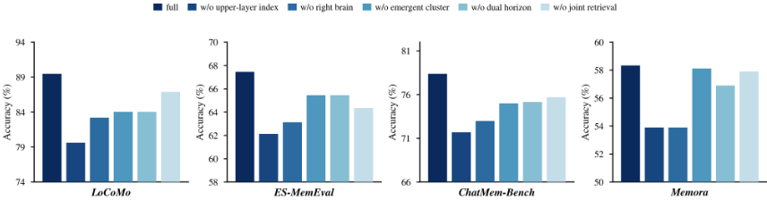
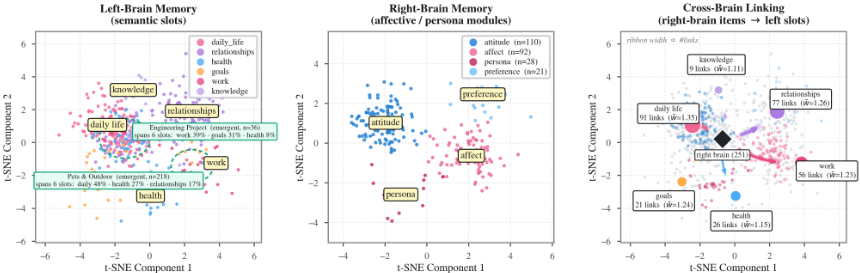
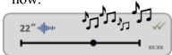

VoiceMem：面向实时交互的流式双脑记忆系统
实时语音对话系统（如 duplex SLM）缺乏流式、准确且有情感与个性化能力的记忆机制，现有系统 2-3 秒的检索延迟远超实时对话约 500ms 的预算。VoiceMem 提出双脑记忆架构：左脑以 schema-entity 两级索引与查询驱动的 cluster emergence 机制组织事实记忆，右脑以独立节点与跨实体节点建模用户画像与情感归因，四阶段流式检索将全部检索隐藏在 VAD 静音窗口内。实验显示其在 top-5 检索预算下于 LoCoMo 达 91.2 分（430 memory tokens、134ms 检索），信息记忆较 Mem0 提升 46.1%，同一索引迁移到三种后端带来 15.8-29.5 分提升。论文还构建了 CHATMEM-400K 训练集与 CHATMEM-BENCH 评测基准，并将上层路由与底层记忆引擎解耦、后端可互换。其密度优先检索、记忆分层组织与成本-延迟-精度权衡方法对本团队的 Agent 记忆与知识库问答场景有直接参考价值。
实时语音对话系统（duplex SLM、voice agent）缺乏流式、准确、有情感与个性化能力的记忆系统：现有记忆系统检索需 2-3 秒，超出实时对话约 500ms 的延迟预算；文本 Agent 记忆常用的 top-100 检索输出超出语音模型的上下文承载能力；信息记忆与情感/画像记忆缺乏统一架构；且记忆方法与对话模型都在快速演进，需要可解耦、可替换后端的基础设施。
提出流式双脑记忆架构。左脑负责事实记忆：schema-entity 两级索引做粗粒度语义路由与实体定位，经一跳强/弱边扩展候选集，使后端只在缩小的候选池中检索，从而在 top-5 小预算下保持精度；并由左脑状态、语义与查询频率共同驱动 cluster emergence 机制，让子簇从重复检索模式中涌现，经 LLM judge 评估相关性/重要性/完整性后提升为新簇；每轮后异步执行 ADD/UPDATE/DELETE/KEEP 更新。右脑负责画像与情感：independent nodes 编码用户稳定特质，cross-entity nodes 编码与左脑实体绑定的情境情感，配合短/长期情感归因机制维护。四阶段流式检索（listening、speech tail、anticipation、searching）将匹配、图扩展与后端搜索流水线化，使检索在 VAD 500ms 静音窗口内完成。基础设施上，通过 SLM-verified black-box OPD（记忆世界构建、闭源教师在线纠正、后验校验）将 Qwen2.5-Omni 等改造为带显式记忆访问的语音模型，产出 CHATMEM-400K 训练集与 CHATMEM-BENCH 评测集；系统解耦为上层路由/双脑组织与底层可替换记忆引擎（当前用 Mem0）。
top-5 检索下左脑比 top-200 设置下的 Mem0 高近 30 分
信息记忆 +46.1%（vs Mem0）/+16.0%（vs 前 SOTA）；persona memory +16.8%/+5.9%；long-horizon audio memory +41.3%/+27.4%
LoCoMo 信息记忆平均 76.39，超 Mem0 +24.12、超 full-context +15.90；temporal reasoning 子类 +54.9，update tracking 子类 +7.4
Persona 记忆 74.16（GPT-4o-mini）/76.56（微调模型），超最强基线 MemOS +1.89；ES-MemEval 上 full-context 冲突检测仅 12.10、用户建模 21.70，VoiceMem 达 69.10/74.00
ChatMem-Bench 14 类中 11 类领先；三个声学类目上文本系统仅 3.23-26.92，VoiceMem 达 45.16-53.84
K=5 时 LoCoMo 91.2 分、430 memory tokens、134ms 检索；最强基线 EverMemOS 83.13 分、1,899 tokens（+8.1 分且 token 少 4.4 倍）；基线整体在 541-6,956 tokens
K=1 时超 EverMemOS +11.8、超 Mem0 +26.5；K=5 超 EverMemOS +12.8；K=10 仅再 +1.3、K=100 仅再 +2.3（8 倍 token）
消融：去掉 schema routing 在 K=3 损失 4.53 分；完全去掉上层索引在 K=5 损失 9.9 分；右脑、emergence、双期更新、联合检索在四个数据集上均造成损失
索引迁移到三种后端（Mem0、LangMem、Zep）提升 15.8-29.5 分；但 LangMem 与 Mem0 起点差 5.50 分、终点差 19.26 分，后端质量仍限制上限
emergence 策略 74.40，超 static +1.80、random_split +2.00、size_threshold +2.79；涌现出的两个非预设 slot 覆盖 254 项、占存储 49.8%
区别于 Mem0/Zep 等事实存储、A-MEM/MemoryOS/MemOS 等 Agent 记忆、Emotional RAG/KEEM 等情感感知检索（论文指出这些方法仍以信息为中心，情感只是重加权存储内容）：VoiceMem 将事实-关系记忆与画像-情感记忆作为两个并行演化、分别维护的结构，通过跨脑关联联合检索；把流式约束从语音交互扩展到记忆访问与更新本身（四阶段检索隐藏在 VAD 静音内）；以密度优先的 schema-entity 索引在比常规低一个数量级的 top-K 预算下取得更高精度；上层路由与底层引擎解耦、后端可互换；并据论文所述首次通过 black-box OPD 训练出带显式记忆访问的语音语言模型。
相关度级别：high
命中能力域：3.1 上下文工程与记忆 | 3.5 评测与可靠使用
理由：直接命中 3.1：论文核心贡献就是一个可部署的 Agent 记忆系统，其 schema-entity 两级索引、密度优先小 top-K 检索、emergence 式记忆重组、事实/情感分离建模、后端解耦等设计对团队的文本 Agent 记忆与知识库问答同样适用，并给出了 token 成本、延迟、精度三轴的量化权衡（430 tokens vs 基线 541-6,956 tokens）。同时命中 3.5：构建了覆盖四维度 14 子类的 CHATMEM-BENCH 评测基准，系统对比 10 个基线系统，其评测维度设计与成本-效率分析方法可借鉴到团队内部记忆/检索组件的评测与选型。语音实时部分（VAD 预算、SLM 训练）与团队当前场景关系较弱，但不影响记忆架构与评测方法的迁移价值。
建议动作：深入精读并做内部分享
arXiv:2608.26005v1 [eess.AS] 2026年8月26日
Zhifei Xie 1 , 5 ∗ Jiaqi Lang 2 ∗ Ze An 2 Yifan Zhao 2 Dongchao Yang 4 Kai Li 3 Ziyang Ma 1 , 5 Mingbao Lin 2 † Chunyan Miao 1 † Shuicheng Yan 2 †
1 南洋理工大学 2 新加坡国立大学 3 清华大学 4 香港中文大学 5 开放交互实验室 envelope Zhifei001@e.ntu.edu.sg
https://xzf-thu.github.io/VoiceMem/

对话式系统，例如双工语音语言模型（speech language models, SLMs），仍然缺乏一个流式、准确且富有共情能力的记忆系统作为其灵魂。我们提出 VOICEMEM，这是一种简洁的记忆架构，包含并行的信息型左脑、情感型右脑以及流式记忆 I/O 机制。我们进一步构建了一套完整的流水线，用于记忆感知的 SLM 训练、长时程评估，以及配备可互换记忆后端的解耦部署。实验与真实部署展示了三大优势：i) 准确性：在 top5 检索条件下，左脑比 MEM0 等经典系统在 top200 条件下的表现高出近 30 分；ii) 情感与个性化：右脑具备短时程与长时程情感归因以及双节点人格建模，在三项人格基准测试（benchmark）上取得了最先进的性能，相比此前最佳系统将总分提升了 1.89 分；以及 iii) 实时与低成本：VOICEMEM 在 134 ms 内即可完成检索，完全处于标准语音活动检测（VAD）延迟范围之内，在不增加额外对话延迟的同时保持了高准确性与低成本。这些结果表明，VOICEMEM 为实时、个性化且具备情感感知的语音交互提供了实用的记忆基础。
记忆是将对话系统（例如语音 Agent）从智能工具转变为以人为中心的伙伴的关键所在。尽管近来涌现了许多强大的记忆系统（Chhikara et al., 2025; Xu et al., 2025b; Hu et al., 2026），以及日益智能、自然的交互模型（例如小语言模型（SLM）（Xie and Wu, 2024a; Xie et al., 2026b; Fang et al., 2025; Qwen Team, 2026a）和双工模型（Ma et al., 2025; ByteDance Seed, 2026; OpenAI, 2026）），但二者尚未融合为一个完整的解决方案。在记忆之上构建兼具共情能力与智能的交互系统，仍然是一个悬而未决的挑战。
在我们看来，有三个障碍横亘在前。（O1）信息智能与情感智能的统一架构。对于实时对话系统而言，对情感与人格的把握与信息和智能同等重要，而情感背后的机制要复杂得多。如何在单一架构中长期对二者同时建模，目前仍属空白。（O2）零延迟下的高信息密度。现有记忆系统与对话系统在两个方面存在冲突：(i) 2-3 秒的检索会突破实时对话 500 ms 的时间预算；(ii) 文本 Agent 记忆中常见的 top-100 输出超出了语音模型所能承受的规模。相反，记忆系统必须几乎不增加延迟、以流式方式运行，同时仍将准确率保持在 top-5。（O3）基础设施与可演化性。记忆方法与语音对话模型都在快速发展。对话模型目前尚无法接受音频-记忆联合输入，而记忆系统必须保持简单有效，才能在一个快速演进的领域中持续有用并不断更新。
我们提出 VOICEMEM，一个用于实时语音交互的简单有效的流式双脑记忆框架，如图 1 所示。针对 O1 与 O2，VOICEMEM 设置了负责信息的左脑和负责情感与人格的右脑。(i) 在左脑中，一个简单的两级模式-实体（schema-entity）架构对记忆条目进行管理与路由，从而提升排序阶段的信息密度，实现 top-5 性能。模式的设定在此至关重要，因此我们加入了一种涌现机制，由左脑状态、语义与查询频率共同驱动，以在长期运行中平衡记忆模式的数量与精度。(ii) 在右脑中，我们定义了两类节点来建模复杂的人类情感与人格：用于刻画个人情感特征的独立节点，以及用于刻画与左脑中实体相关联的情感特征的跨实体节点，二者均由短期与长期情感归因机制进行维护。(iii) 为进一步降低延迟，我们提出一种四阶段流式记忆查询，将每一步拆分开来并实时运行，在标准 VAD 所需的时间内即可完成查询。
针对 O3，我们将 VOICEMEM 重新组装为一个完全解耦的框架，并新增了两个模块。（i）模型适配：为避免遗忘，我们在小规模上进行训练，并提出 SLM 验证的黑盒 OPD，其通过一个包含记忆世界构建、闭源模型在线纠正与事后验证的循环来训练模型。该循环过程中产生的数据构成了用于训练的 CHATMEM-400K 与用于评估的 CHATMEM-BENCH——一个涵盖 {信息（Information）、人格（Persona）、情感归因（Affective Attribution）、副语言与环境（Paralinguist&Environment）} 四个维度、横跨 14 个细粒度类别的基准测试。（ii）独立记忆引擎：记忆方法发展迅速，因此我们投入了大量额外精力，将 VOICEMEM 改造为一个图上叠图（graph-on-graph）框架。VOICEMEM 的算法仅在上层负责管理、路由与流式处理；下层则完全独立。我们选用 Mem0 作为下层，因其当前具备最先进的性能。我们在涵盖信息记忆（相比 Mem0 +46.1% / 相比此前最先进（SOTA）方法 +16.0%）、人格记忆（+16.8% / +5.9%）以及长时程音频记忆（+41.3% / +27.4%）等一系列基准测试上开展了广泛实验，结果表明，VOICEMEM 在文本与语音上持续提升记忆质量，同时支持低延迟流式检索，并能在不同记忆后端之间稳健迁移。
基于嵌入的记忆检索。检索增强生成（RAG）根据语义相似度检索外部记录 (Lewis et al., 2020)。诸如 Mem0 (Chhikara et al., 2025) 和 Zep (Rasmussen et al., 2025) 等通用记忆引擎进一步支持记忆的写入与更新。设 M t 为第 t 步的记忆存储，q t 为当前查询。标准检索选择并生成
智能体式记忆系统（例如 A-Mem (Xu et al., 2025b) 和 MemoryOS）与个人记忆系统（例如 MemoryBank (Zhong et al., 2024) 和 EverMemOS (Hu et al., 2026)）在此基础之上添加了额外的存储结构。
情感感知检索。情感感知系统还额外考虑情感兼容性。Emotional RAG (Huang et al., 2024) 将情感相关性融入检索，而 KEEM (Kang et al., 2025a) 则利用情感上下文来指导记忆的构建与更新。设 a t 和 a i 分别表示当前查询与记忆 m i 的情感表示。检索变为
尽管将情感纳入了检索，这些方法仍然以信息为中心，在情感关联与长期情感积累方面的能力有限。
流式双脑记忆。信息智能与情感智能需要不同的维护方式：一个大规模地存储信息，另一个则对其进行积累与归因。因此，我们将先前的工作扩展为两个并行的大脑。左脑 G L t 将事实单元组织为不断演化的事实簇，而右脑 G R t 则维护情感归因单元。两者通过跨脑关联 E LR t 相连接：
对于每一条输入话语 u t，两个大脑都会激活新单元并进行增量更新：
响应通过联合检索生成：
因此，传统 RAG 检索语义相似的记录，情感感知 RAG 增加了情感兼容性，而流式双脑记忆则持续构建并联合查询相互分离的事实性与情感性认知结构。
我们将所提出的流式双脑架构实例化为 VOICEMEM，以满足三项要求：(i) 在有限的记忆预算下最大化信息密度；(ii) 在学习感知并适应情绪与态度的同时，建立对个性的长期理解；(iii) 不为实时语音对话引入可感知的延迟。
VOICEMEM 中左脑的目标是在在线语音交互的紧凑上下文与延迟预算下，支持高效的记忆存储与检索。现有系统面临两个关键挑战。(i) 检索多达 top-100 个候选可以提升覆盖范围，但会使语音语言模型有限的上下文容量不堪重负；而将检索限制在 top-5 则有遗漏相关记忆的风险。(ii) 传统记忆流水线通常需要 2-3 秒来完成检索与处理，而实时对话仅允许 100-200 毫秒的额外延迟，以保持自然的对话轮替。
面向密集记忆访问的 Cluster-Entity-MemItem 索引。当检索被限制在较小的预算（例如 top5）时，性能主要取决于候选空间的语义密度，而非日益复杂的排序方法。多个在无关上下文中指涉同一实体的记忆项可能占据 topk 结果的主导地位，却几乎不提供有用的信息。因此，我们将存储在 MEM0 中的后端记忆项与构建在其之上的轻量级语义索引解耦。该索引在访问底层记忆之前，将检索范围缩小到一个紧凑且语义连贯的候选集合。

为兼顾简洁性与效率，左脑索引采用两级层次结构，由用于粗粒度语义路由的模式（schema）和用于定位具体人物、事件或概念的实体（entity）组成。我们定义
每个实体 v ∈ V 恰好属于一个模式 s ∈ S，其中 d v 和 d s 为文本描述，I v 索引相关联的后端记忆项，V s 包含被分配给模式 s 的实体。边集 E = E micro ∪ E macro 支持轻量级语义扩展：N micro v 连接相关实体，而 N macro s 连接相关模式。我们直接编码模式隶属关系，而非引入显式的模式-实体边，从而避免递归遍历，并使检索既紧凑又保持语义聚焦。
检索。在用户说话的同时，流式匹配器从部分转写文本中识别出相关的模式与实体，然后通过强、弱一跳连接对匹配到的实体以及匹配模式中所包含的实体进行扩展：
其中，V t 和 S t 分别表示匹配到的实体与模式；V S t 表示被分配给匹配模式的实体；Z t 是通过一跳强边和弱边得到的扩展实体集合。随后，相应的记忆项按如下方式进行索引与搜索：
后端仅在该候选池中进行搜索，而不是搜索完整记忆 M。通过保留与匹配实体及相邻实体相关联的记忆，同时大幅缩小搜索空间，所提出的索引实现了准确且高效的 top5 检索。
快速更新。在每轮对话之后，异步更新器会提取新的事实，并通过 ADD、UPDATE、DELETE 或 KEEP 操作将其与邻近的记忆进行联合协调。随后，它会在关键路径之外更新相关的模式、实体和关系；实现细节将在附录中给出。
簇涌现机制。随着簇的增长，其信息密度会下降，而频繁的基于规则的拆分可能会使相关记忆碎片化并降低检索覆盖率。因此，我们让连贯的子簇从重复的检索模式中涌现。
设 Q 为一个会话内观察到的查询，A_q 为由查询 q 激活的实体，H 为当前簇中实体的一个连通子集。我们通过下式度量它们的查询连贯性：
高分表明 H 中的实体被反复地共同检索。如果满足条件的最大子图超过阈值 α，大语言模型（LLM）裁判会进一步评估其相关性、重要性和完整性，然后再将其提升为一个新的簇。整个涌现流程总结在算法 1 中。
输入：簇 G_c、查询集 Q、连贯性阈值 α
1: H ← CONNECTEDCANDIDATES(G_c)
2: H⋆ ← arg max_{H∈H} |H| subject to ρ(H) > α // 通过连贯性条件过滤。
3: if H⋆ 存在 then
4: // 相关性、重要性和完整性验证。
5: (r, i, c) ← LLMJUDGE(H⋆)
6: if r ∧ i ∧ c then
7: PROMOTE(H⋆) // 执行簇涌现。
8: else
9: DISABLEPOTENTIAL(H⋆) // 防止后续候选分裂
10: end if
11: end if
左脑记录发生了什么，而右脑则捕捉用户是谁。右脑并行运行，维护人格记忆（persona memory）：即植根于特定人物、事件或概念的稳定性格倾向、情感倾向与态度。这类证据跨越多个时间尺度，从单轮对话内的即时反应，到跨会话巩固形成的持久特性。
人格图（Persona Graph）。右脑维护两类互补的人格节点：
其中，d 是人格描述，I 索引其支持的后端记忆条目。独立节点 v I 编码用户内在属性，包括由纵向证据支持的持久性格倾向、行为规律和情感倾向。跨实体节点 v C e 则捕捉依赖于上下文的情感，其中 ρ v,e 将每个节点与左脑实体 e ∈ V 相关联。这一区分至关重要：v I 解释用户的持久特征，而 v C e 则保留情绪所针对的是谁或什么。若将二者混同，要么会把情境性反应当作稳定特质，要么会抹去赋予情感意义的现实世界成因。
检索（Retrieval）。流式匹配器从部分转录文本中联合激活独立人格节点与跨实体人格节点。这些匹配结果与链接到左脑所激活实体的跨实体节点相结合：
其中，Z t 是左脑在式 (1) 中产生的扩展实体集合。由此得到的候选池将对话直接蕴含的人格证据与植根于当前相关现实世界实体的态度结合起来，而无需检索完整的人格记忆。
短时程归因（Short-Horizon Attribution）。对于每个对话输入 x t ，情感估计器生成情绪表示 e t = ϕ ( x t )。二元组 ( x t , e t ) 为添加、编辑或合并人格节点提供即时证据：

短时程归因将当前情感连同其情境性对象与成因一并保留，使人格图能够在正在进行的交互中自适应调整。
长时程归因（Long-Horizon Attribution）。每次会话结束后，长时程归因联合分析序列 ( x 1 , e 1 ) , ( x 2 , e 2 ) , . . . , ( x T , e T ) ，并将反复出现的证据巩固为稳定的独立人格节点：
该过程并非累积每一个瞬态状态，而是识别出持久的情感与行为模式，从而对“用户是谁”给出稳定的刻画。
最后，我们描述 VOICEMEM 的流式检索过程，这是其近零附加延迟的核心。我们为该过程引入四个阶段：聆听（listening）、语音尾音（speech tail）、预判（anticipation）与搜索（searching）。在聆听与 (i) 语音尾音（0-200ms）阶段，当用户说话时，我们以流式方式获取转写文本 x ≤ t (Shi et al., 2026; Xie et al., 2026c)、双脑中匹配到的实体与模式，以及说话人身份 p t：
(ii) 预判（200-400ms）。假设一旦静默达到 200 ms，回复便即将到来。提取查询嵌入，并按式 (1) 与式 (5) 扩展双脑的上层图：
(iii) 搜索（400-500ms）。只剩下后端搜索。对双脑进行搜索并合并：
语音活动检测（VAD）阈值通常设置为 500 ms，从而在回复必须开始之前留出 400 ms 的时间窗口；VOICEMEM 留有余量地满足这一预算，因为稠密双脑检索本身仅耗时 134 ms。
VOICEMEM 将记忆从文本扩展到音频，支持多说话人区分、副语言分析和环境声音记忆。启用后，Agent 有选择地将音频保留为说话人声纹、声学嵌入或原始波形，并将其作为多模态节点附加到相应的实体节点上。
在本节中，我们介绍 VOICEMEM 在真实场景中的实现细节，重点关注两个方面：i) 模型训练，我们通过在线黑盒同策略蒸馏，将原本面向语音输入/文本输出的 Qwen2.5-Omni (Xu et al., 2025a)、Qwen3Omni (Qwen Team, 2025) 和 Step-Audio2-Mini (Wu et al., 2025a) 模型家族转化为记忆增强的语音语言模型，据我们所知，这是首批具备显式记忆访问能力的语音语言模型；以及 ii) 部署，我们为 VOICEMEM 设计了一种可演化的两层系统架构，将记忆层与底层搜索引擎解耦。

底层记忆引擎正在快速演进，参数化记忆机制与潜在记忆机制等方向也日益显现出前景。因此，我们避免将实时记忆架构与任何特定后端紧密耦合，否则将阻碍对更新记忆算法的及时采用。为此，我们围绕解耦架构对 VOICEMEM 进行了大幅重新设计：我们的重点在于上层路由、并行的双脑组织以及流式推理，而由第 3 节中 MemSearch 所抽象的底层引擎则保持完全可互换。在当前实现中，我们采用 MEM0 作为后端，因为它具有良好的通用性和领先的最新性能。
7
| Method.Method | LoCoMo.Single | LoCoMo.Multi | LoCoMo.Temp. | LoCoMo.Open | LongMemEval.Extr. | LongMemEval.Multi | LongMemEval.Upd. | LongMemEval.Temp. | Memora.Rem. | Memora.Rec. | Memora.Rea. | Avg.. |
|---|---|---|---|---|---|---|---|---|---|---|---|---|
| Reference | ||||||||||||
| Full-Context | 75.87 | 72.27 | 70.29 | 57.45 | 45.45 | 73.92 | 78.21 | 31.58 | 85.54 | 52.1 | 22.67 | 60.49 |
| Memory Engines | ||||||||||||
| Mem0 | 67.13 | 51.15 | 55.51 | 72.93 | 62.82 | 46.21 | 70.12 | 40.15 | 40.42 | 52.58 | 16 | 52.27 |
| Zep | 66.91 | 53.7 | 60.29 | 70.82 | 47.46 | 74.44 | 54.1 | 34.62 | 33.36 | 37.38 | 3.5 | 48.78 |
| LangMem | 62.23 | 47.92 | 43.43 | 71.12 | 55.13 | 20.3 | 66.67 | 15.79 | 68.16 | 48.88 | 30 | 48.15 |
| Agent Memory | ||||||||||||
| A-MEM | 49.79 | 49.85 | 54.05 | 49.91 | 64.62 | 48.87 | 64.11 | 47.36 | 68.82 | 35.04 | 2 | 48.58 |
| MemoryOS | 69.35 | 62.3 | 44.72 | 44.29 | 58.1 | 31.06 | 48.72 | 32.33 | 15.24 | 38.86 | 1.5 | 40.59 |
| MemOS | 81.09 | 67.49 | 75.18 | 55.9 | 86.77 | 70.7 | 74.33 | 77.49 | 51.84 | 62.64 | 20.66 | 65.83 |
| Personal Memory | ||||||||||||
| MemoryBank | 21.25 | 18.4 | 31.5 | 26.28 | 23.33 | 26 | 14 | 20 | 22.22 | 41.88 | 1.42 | 22.39 |
| EverMemOS | 90.12 | 87.43 | 85.16 | 69.79 | 82.71 | 73.68 | 89.74 | 77.44 | 17.21 | 33.27 | 16.67 | 65.75 |
| Emotional RAG | 19.62 | 25.53 | 34.89 | 13.54 | 40 | 55 | 70 | 65 | 51.16 | 39.38 | 14.75 | 38.99 |
| Ours | ||||||||||||
| VoiceMem | 94.6 | 91.6 | 89.8 | 85.6 | 83.2 | 75 | 77.5 | 95 | 66.8 | 50.5 | 30.7 | 76.39 |
| VoiceMem ‡ | 95.15 | 92.4 | 91.35 | 86.08 | 79.64 | 70.17 | 79.24 | 89.63 | 69.1 | 54.77 | 24.61 | 75.65 |
| Method.Method | LoCoMo.Single | LoCoMo.Multi | LoCoMo.Temp. | LoCoMo.Open | LongMemEval.Extr. | LongMemEval.Multi | LongMemEval.Upd. | LongMemEval.Temp. | Memora.Rem. | Memora.Rec. | Memora.Rea. | Avg.. |
| Method.Method | ES-MemEval.IE | ES-MemEval.TR | ES-MemEval.CD | ES-MemEval.UM | PersonaMem.Rec. | PersonaMem.Gen. | PersonaMem.Evol. | PersonaMem.Reason | PersonaMem.Reco. | PersonaLens.Per. | PersonaLens.TCR | Avg..Avg. |
|---|---|---|---|---|---|---|---|---|---|---|---|---|
| Reference | ||||||||||||
| Full-Context | 20.2 | 19.6 | 12.1 | 21.7 | 41 | 46 | 68 | 77 | 37 | 75 | 91.08 | 46.24 |
| Memory Engines | ||||||||||||
| Mem0 | 75.1 | 56.7 | 72.3 | 64.2 | 32.13 | 57.89 | 54.68 | 80.81 | 52.73 | 82.25 | 92.39 | 65.56 |
| Zep | 66.8 | 42.3 | 64.2 | 58 | 35.3 | 42.1 | 34.5 | 50.5 | 36.4 | 58.5 | 82.74 | 51.94 |
| LangMem | 18.8 | 15 | 20.4 | 22.7 | 31.29 | 8.77 | 53.24 | 81.82 | 40 | 77.45 | 88.99 | 41.68 |
| Agent Memory | ||||||||||||
| A-MEM | 67.8 | 58.3 | 67 | 56.7 | 63.01 | 57.89 | 54.68 | 85.86 | 69.09 | 62.5 | 83.26 | 66.01 |
| MemoryOS | 43.9 | 30.5 | 41 | 41.5 | 47.06 | 56.14 | 32.37 | 48.48 | 47.27 | 55.75 | 82.01 | 47.82 |
| MemOS | 77.7 | 64.6 | 66.3 | 73.5 | 72.72 | 56.14 | 58.27 | 78.79 | 72.72 | 82.75 | 91.47 | 72.27 |
| Personal Memory | ||||||||||||
| MemoryBank | 43 | 35.2 | 42.7 | 38.7 | 35.29 | 49.12 | 51.08 | 56.57 | 40 | 64.5 | 80.66 | 48.8 |
| EverMemOS | 66.8 | 50.7 | 59.6 | 45.9 | 47.06 | 47.37 | 41.01 | 43.43 | 56.36 | 63.25 | 79.91 | 54.67 |
| Emotional RAG | 82.3 | 67.1 | 77.3 | 73.7 | 52.94 | 61.4 | 44.6 | 58.59 | 43.64 | 64.25 | 82 | 64.35 |
| Ours | ||||||||||||
| VoiceMem | 82.8 | 67.3 | 69.1 | 74 | 76.47 | 64.91 | 51.08 | 83.84 | 70.91 | 83.75 | 91.63 | 74.16 |
| VoiceMem ‡ | 81.2 | 64.7 | 73.5 | 71.9 | 75.19 | 70.17 | 73.38 | 83.94 | 69.1 | 85.5 | 93.57 | 76.56 |
| Method.Method | ES-MemEval.IE | ES-MemEval.TR | ES-MemEval.CD | ES-MemEval.UM | PersonaMem.Rec. | PersonaMem.Gen. | PersonaMem.Evol. | PersonaMem.Reason | PersonaMem.Reco. | PersonaLens.Per. | PersonaLens.TCR | Avg..Avg. |
在本节中，我们进行了一系列实验来回答以下四个问题：
8
| Method.Method | Information.Upd. | Information.Temp. | Information.Synt. | Information.Abst. | Persona.Prof. | Persona.Pref. | Persona.Impl. | Affective Attr..Attr. | Affective Attr..Agd. | Affective Attr..Phras. | Paraling.&Env..Bsr. | Paraling.&Env..Asi. | Paraling.&Env..Mul. | Paraling.&Env..Asa. | Avg..Avg. |
|---|---|---|---|---|---|---|---|---|---|---|---|---|---|---|---|
| Reference | |||||||||||||||
| Full-Context | 62.07 | 42.11 | 68.42 | 57.89 | 61.11 | 47.83 | 41.17 | 16.67 | 57.14 | 37.78 | 11.76 | 22.58 | 26.92 | 90 | 45.96 |
| Memory Engines | |||||||||||||||
| Mem0 | 55.17 | 31.57 | 83.21 | 68.42 | 66.67 | 78.26 | 52.94 | 16.67 | 61.9 | 46.67 | 11.76 | 3.23 | 11.54 | 93 | 48.64 |
| Zep | 37.93 | 15.78 | 63.16 | 63.16 | 50 | 69.57 | 35.29 | 8.33 | 57.14 | 33.33 | 5.88 | 9.68 | 7.69 | 91.5 | 39.17 |
| LangMem | 58.62 | 21.05 | 73.68 | 78.95 | 61.11 | 73.91 | 47.05 | 41.67 | 47.62 | 42.22 | 11.76 | 12.9 | 15.38 | 93 | 48.49 |
| Agent Memory | |||||||||||||||
| A-MEM | 41.38 | 10.53 | 68.42 | 73.68 | 38.89 | 73.91 | 41.17 | 25 | 52.38 | 44.44 | 23.53 | 9.68 | 3.85 | 93.65 | 42.89 |
| MemoryOS | 51.71 | 36.84 | 89.47 | 73.68 | 44.44 | 82.61 | 35.29 | 25 | 52.38 | 35.55 | 5.88 | 19.35 | 15.38 | 95.59 | 47.37 |
| MemOS | 72.41 | 31.57 | 52.63 | 84.21 | 77.78 | 78.26 | 47.05 | 50 | 71.43 | 46.67 | 17.65 | 12.9 | 19.23 | 93.46 | 53.95 |
| Personal Memory | |||||||||||||||
| MemoryBank | 41.38 | 5.26 | 47.37 | 63.16 | 38.89 | 52.17 | 29.41 | 8.33 | 42.86 | 24.44 | 23.53 | 6.45 | 7.69 | 94.49 | 34.67 |
| EverMemOS | 44.83 | 26.32 | 63.16 | 94.74 | 50 | 69.57 | 52.94 | 33.33 | 66.67 | 37.78 | 11.76 | 9.68 | 23.08 | 94.41 | 48.45 |
| Emotional RAG | 34.48 | 10.53 | 57.89 | 73.68 | 44.44 | 60.87 | 58.82 | 58.33 | 52.38 | 42.22 | 11.76 | 3.23 | 3.85 | 94.55 | 43.36 |
| Ours | |||||||||||||||
| VoiceMem | 79.31 | 47.37 | 83.68 | 89.47 | 72.22 | 86.96 | 64.71 | 66.67 | 76.19 | 51.11 | 47.06 | 45.16 | 53.84 | 98.5 | 68.73 |
| VoiceMem ‡ | 86.21 | 42.11 | 83.16 | 89.47 | 66.67 | 86.96 | 58.82 | 58.33 | 66.67 | 48.89 | 52.94 | 51.61 | 50 | 95.56 | 66.96 |
| Method.Method | Information.Upd. | Information.Temp. | Information.Synt. | Information.Abst. | Persona.Prof. | Persona.Pref. | Persona.Impl. | Affective Attr..Attr. | Affective Attr..Agd. | Affective Attr..Phras. | Paraling.&Env..Bsr. | Paraling.&Env..Asi. | Paraling.&Env..Mul. | Paraling.&Env..Asa. | Avg..Avg. |
基准测试（Benchmarks）。我们在三个基准测试家族上进行评估。(i) 信息记忆：LoCoMo (Maharana et al., 2024)、LongMemEval (S) (Wu et al., 2025b) 和 Memora (Uddin et al., 2026)。(ii) 人设记忆：ES-MemEval (Chen et al., 2026)、PersonaMem (Jiang et al., 2025) 和 PersonaLens (Zhao et al., 2025)。(iii) 基于语音的记忆：ChatMem-Bench，包含覆盖 53 小时音频的 316 个问题，划分为四个能力组和十四个子类别。
基线（Baselines）。共十个系统，分为四组。(i) 参考：Full-Context。(ii) 记忆引擎：Mem0 (Chhikara et al., 2025)、Zep (Rasmussen et al., 2025)、LangMem (LangChain, 2025)。(iii) Agent 记忆：A-MEM (Xu et al., 2025b)、MemoryOS (Kang et al., 2025b)、MemOS (Li et al., 2025)。(iv) 个人记忆：MemoryBank (Zhong et al., 2024)、EverMemOS (Hu et al., 2026)、Emotional RAG (Huang et al., 2024)。
实现细节（Implementation details）。所有基线系统均使用 GPT-4o-mini (OpenAI, 2024a) 作为骨干大语言模型（LLM），并使用 text-embedding-3-small (OpenAI, 2024b) 作为嵌入模型，温度设为 0。VoiceMem 在六种检索设置 K ∈ {1, 3, 5, 10, 30, 100} 下进行评估，其中 K = 5 为默认工作点。
针对有关文本对话的 [RQ1.1]，VOICEMEM 在信息与人格两个维度上均进行稠密记忆检索。如表 1 所示，我们的方法在十一个信息子类别中的七个上居于领先。其平均得分为 76.39，以 +24.12 的优势超过其自身的存储后端 Mem0，并以 +15.90 的优势超过能看到完整历史的全上下文处理。当多条记忆必须同时到达时（例如时间推理，+54.9），领先幅度最大；而在更新追踪（+7.4）上幅度最小，因为单条最近记忆已足以回答该类问题。如表 2 所示，在使用 GPT-4o-mini 时，我们的方法在十一个人格子类别上达到 74.16，而在使用我们微调后的响应模型时达到 76.56，以 +1.89 的优势超过最强基线 MemOS。这一参照关系在 ES-MemEval 上发生反转：全上下文在冲突检测上仅得 12.10，在用户建模上仅得 21.70，而我们的方法分别达到 69.10 和 74.00，也就是说，证据就存在于其输入之中，它却仍然无法将其归因。值得注意的是，两张表都是在比文本 Agent 记忆中常规的 top100 设置低一个数量级的检索预算下得出的，这表明性能提升来自更稠密的候选池，而非更大的候选池。
如第 4.1 节中简要介绍的，CHATMEM-BENCH 评估一个记忆系统能否将跨越复杂环境、情感与信息的长期语音交互整合为一名优秀的语音助手。它包含 316 个问题，取自 15,314 轮、共 53 小时的对话，且每个会话均由人工精心策划——从选择主题，到构建记忆世界、设计挑战。如表 3 所示，该基准测试（benchmark）包含四个维度、14 个细粒度类别。从左到右，信息（Information）维度涵盖更新追踪、时序推理、综合与拒答；人设（Persona）维度涵盖画像约束、偏好对齐推荐与隐式需求推断；情感归因（Affective Attribution）维度涵盖情绪对象归因、依恋引导决策与情感感知措辞；副语言与环境（Paralinguistics & Environment）维度涵盖背景声音回忆、声学场景推断、多用户对话记忆与声学风格适配。
9


针对长程多轮音频的 [RQ1.2]，如表 3 所示，VOICEMEM 在 14 个类别中的 11 个上处于领先，且差距在副语言与环境维度上最大——在这一维度上，转写文本完全不携带任何证据：所有文本系统在三个声学类别上的得分都落在 3.23 到 26.92 之间，而我们的方法则达到 45.16 到 53.84。情感归因则呈现出相反的情况，即文本基线依然具有竞争力，因为用词本身已经携带了大部分情感信号，而音频带来的增量则转而体现在依恋引导决策与情感感知措辞上。
[RQ2] 单一工作点下的准确率、成本与延迟。图 5 同时绘制了这三个维度。VoiceMem 在 K=5 时达到 91.2，使用 430 个记忆 token，检索耗时 134 ms。最强的基线 EverMemOS 以 1,899 个 token 达到 83.13：在 token 数量减少至 1/4.4 的同时高出 +8.1 分。整个基线阵营的 token 数位于 541 到 6,956 之间，因此这种节省并非某一组对比所特有。延迟在 K 上也是平坦的：从 K=3 到 K=100，搜索耗时始终保持在 134 ms 附近，因为模式路由（schema routing）在排序之前就限定了候选池的规模，所以最终返回的条目数量并不会改变搜索量的大小。
[RQ2] 小预算在准确率上没有任何代价。图 6 在 LoCoMo 上对 K 进行了扫描。VoiceMem 在每个 K 下都是最高的，且在预算最紧张处领先幅度最大：在 K=1 时比 EverMemOS 高 +11.8、比 Mem0 高 +26.5，在 K=5 时比 EverMemOS 高 +12.8。曲线在 K=5 之后趋于平坦——K=10 增加 1.3 分，K=100 以 8 倍的 token 为代价增加 2.3 分——因此在 K=5 下运行几乎不损失任何东西。基线没有这样的选择余地：EverMemOS 需要 top10 才能达到 83.13，而 VoiceMem 在 K=3 时用 362 个 token 就已经超过了这一数值；Mem0 和 Zep 在任何预算下都无法超过 63。虚线曲线移除了模式路由，展示了节省来自何处：它在 K=3 时损失 4.53 分，到 K=5 时差距缩小至 0.05 以内，也就是说，路由并不能抬高上限，而是降低了达到上限所需的预算——若没有它，要匹配 430 token 的准确率需要 K=30 和 1,277 个 token。请注意，该消融在禁用基于模式的路由的同时保留了上层索引（upper-layer index），因此候选池仍然被缩小；而完全移除索引在同样的 K=5 下会损失 9.9 分（图 7），这才是真正承载增益的部分。

[RQ3] 每个机制在每个数据集上都有贡献。图 7 在四个数据集上每次禁用一个机制。全部五项消融在所有四个数据集上都出现准确率下降。移除上层索引在所有数据集上都是最大的损失（在 LoCoMo / ES-MemEval / ChatMem-Bench / Memora 上分别为 -9.9 / -5.3 / -6.7 / -4.4）。右脑次之（-6.3 / -4.3 / -5.4 / -4.4），说明情感与人格承载着事实存储所不具备的信息。涌现聚类（emergent clustering，-5.5 / -2.0 / -3.4 / -0.2）与双视野更新（dual-horizon updating，-5.4 / -2.0 / -3.2 / -1.4）在会话最长的 LoCoMo 上损失最大，在 Memora 上最小。联合检索（joint retrieval）在 LoCoMo 和 ChatMem-Bench 上是损失最小的（-2.6 / -3.1 / -2.7 / -0.4）：取两个分别排序的列表的并集是一种可行的后备方案。另外两项消融——单跳邻居模式应如何进入提示，以及聚类维护与随机拆分相比效果如何——在附录 B 中给出。
[RQ3] 这些机制所产生的结构。图 8 展示了这些机制运行之后存储库所呈现的样子。左侧存储库在六个预设槽位中容纳了 510 个条目。另有两个槽位从未被预设；它们由语义图涌现而来，涵盖 254 个条目，占整个存储库的 49.8%。两者均不落在任何单一预设槽位之内：Pets & Outdoor（218 个条目）有 48% 来自 daily_life，27% 来自 health，17% 来自 relationships，而 Engineering Project（36 个条目）则分布于 work（39%）与 goals（31%）之间。两者均横跨全部六个预设槽位，因此涌现是在预设边界之间对存储库进行重新划分，而非在边界内部进行细化——这正是禁用该机制在 LoCoMo 上代价最大的原因，因为在 LoCoMo 中会话持续时间最长，且预设槽位与实际主题结构相距最远。右侧存储库在四个模块中容纳 251 个条目，并通过 280 条分布不均的边与左脑槽位相连：daily_life 接收 91 条，knowledge 接收 9 条。
[RQ4] 该索引可跨后端迁移。该索引需要可按标识符寻址的条目、相似性搜索以及 UPDATE 写入。在未重新调整阈值的情况下，它使三个存储库的得分均提升了 15.8 至 29.5 分（表 4），表明该增益并非特定于某一存储库。Mem0 为完整系统；然而，LangMem 与 Mem0 起初相差在 5.50 分以内，最终却相差 19.26 分，因此后端质量仍然制约着恢复效果。
如图 9 所示，当前的实时语音模型能够流畅地回应当前对话轮次，但难以积累关于用户的持久知识。VoiceMem 通过联合建模语义、偏好、情感以及音频相关的记忆来克服这一局限，使响应能够以用户的交互历史为条件。其流式双脑架构在支持长时程与多模态回忆的同时，将事实记忆与情感归因分离开来。由此，VoiceMem 以极小的延迟开销，将轮次级的语音理解转化为连续、个性化的用户理解。
| Backend | bare | + ours | ∆ |
|---|---|---|---|
| Mem0 | 61.68 | 91.2 | 29.52 |
| LangMem | 56.18 | 71.94 | 15.76 |
| Zep | 62.93 | 85.85 | 22.92 |
| mean | 60.26 | 83 | 22.73 |
| Backend | bare | + ours | ∆ |
11
该模型学习的是该用户在真正感到不安时的声音表现。
上下文：模型记住了用户一周前提到的一件重要事件。
很高兴听到这个。你想聊些什么？
听起来真让人沮丧。也许可以向你的老板寻求更具体的反馈。
看似最艰难的，或许并不仅仅是提案被拒，而是……
听起来真是漫长的一天。发生什么事了。
上下文：用户昨天在一家咖啡馆听到一首歌。
我昨天在咖啡馆听到的那首歌是什么？
今天是不是你上周跟我提到的那场面试？你为它准备了将近两个月——听起来结果可能不如你所愿。
抱歉，我不知道那是什么歌。

VoiceMem 我昨天录制了那个音频事件。现在正在回放昨天的音频时刻。
本文提出了 VOICEMEM，一种流式双脑记忆框架，它在不突破延迟预算的前提下，为实时对话系统同时配备信息性记忆与情感性记忆。左脑通过带有查询驱动聚类涌现机制的两级模式-实体索引来组织事实性知识，使候选池保持足够稠密，足以在 top-5 检索预算下存活；右脑则通过由短时程与长时程情感归因所维护的独立及跨实体人格节点对用户个体进行建模。四阶段流式查询进而将整个检索过程隐藏在标准语音活动检测（VAD）本来就要等待的静音之中。围绕这一核心，我们构建了一套完整的流水线，涵盖记忆感知的小语言模型（SLM）训练、长时程评估以及后端可替换的解耦部署。实验表明，VOICEMEM 在比常见做法低一个数量级的检索预算下，于信息与人格两类基准测试（benchmark）上均处于领先，在 LoCoMo 上以 430 个记忆 token 和 134 ms 的检索耗时取得 91.2 的成绩；同时，同一索引还能将三种不同后端的性能提升 15.8-29.5 分。通过以几乎为零的延迟代价将轮次级语音理解转化为持续且个性化的用户理解，VOICEMEM 为下一代具备共情能力的实时语音助手奠定了实用的记忆基础。
12
Agent 记忆。Agent 记忆已从 Mem0 (Chhikara et al., 2025) 和 Zep (Rasmussen et al., 2025) 等可扩展的事实存储，发展到会随时间推移修订链接或固化记忆的自组织与图结构系统 (Xu et al., 2025b; Banerjee et al., 2026; Jiang et al., 2026; Wu et al., 2026b)。一条平行的路线将情感纳入检索与更新之中，包括 Emotional RAG (Huang et al., 2024)、KEEM (Kang et al., 2025a)、动态情感记忆管理 (Lu and Li, 2025) 以及 DualMem (Zhang et al., 2026)。然而，这些方法在很大程度上仍以文本为中心：情感大多只是对已存储内容进行重新加权，而事实关系与面向具体人物的归因并未作为彼此独立、持续演化的状态加以维护。VoiceMem 则将不断累积的关系信息记忆与持续修订的人格记忆分离开来（第 3.1 节和第 3.2 节）。
语音语言模型。语音语言模型已从对话重叠发展到全双工交互以及语音过程中的推理。dGSLM (Nguyen et al., 2023) 对重叠对话进行建模，而 LSLM (Ma et al., 2025)、SyncLLM (Veluri et al., 2024)、Mini-Omni (Xie and Wu, 2024a)、Mini-Omni2 (Xie and Wu, 2024b)、Moshi (Défossez et al., 2024)、SALMONNomni (Yu et al., 2024) 和 Audio-Interaction (Xie et al., 2026b) 则逐步支持同时聆听、说话以及低延迟多模态生成。更近期的系统将推理移入交互窗口之内：Mind-Paced Speaking (Wu et al., 2025c)、SHANKS (Chiang et al., 2026)、Chronological Thinking (Wu et al., 2026a) 和 Mini-Omni-Reasoner (Xie et al., 2025) 将推理与正在进行的语音交错进行。然而，记忆在很大程度上仍处于这条实时路径之外；VoiceMem 则将流式约束扩展到记忆访问与修订本身（第 3.3 节）。
记忆-交互系统。一条互补的路线研究内部状态如何塑造交互行为。神经科学研究表明，语音存在特化的并行通路 (Hickok and Poeppel, 2007)，而情绪显著性记忆会受到独特的调节 (McGaugh, 2004)；与此同时，Talker-Reasoner (Christakopoulou et al., 2024) 和 Fast-in-Slow (Chen et al., 2025) 等计算双系统模型将快速交互与更深层的推理分离开来。主动式 Agent 进一步利用推断出的意图或持久化上下文来决定何时以及如何采取行动 (Zhang et al., 2024; Lu et al., 2025)；其中，PASK (Xie et al., 2026a) 尤其将主动式交互与长期记忆相结合。这些系统利用记忆或内部状态来支持推理与动作选择，而 VoiceMem 聚焦的则是记忆基底本身：事实-关系状态与人格-情感状态被分开维护，并在持续交互过程中并行更新。
当某个模式（schema）拥有强连接的邻居时，该邻居既可以被压缩成一句话描述，也可以被展开为若干记忆条目去竞争 topK 个槽位。表 5 将这两种做法与完全忽略邻居的方式进行了对比。
在 LoCoMo 上，压缩与宏展开的表现难分伯仲（91.2 对 91.10），但压缩在 ES-MemEval 上明显更优（+2.76），而忽略邻居则会分别造成 3.4 和 9.1 的损失——因此无论采用哪种方式，邻居信息都确实在发挥作用。真正将两者区分开来的是候选池：压缩能抑制候选池的增长（在 ES-MemEval 上为 144.1 对 165.7），代价是在 LoCoMo 上多出 71.2 个提示 token。我们选择压缩是因为它能约束候选池的规模，而不是因为它更准确。
表 6 在 ES-MemEval P1（32 个会话）上比较了四种簇维护策略，评分覆盖全部 252 个问题，K = 5。
emergence 的准确率最高，达到 74.40，领先 static 1.80 分，领先 random_split 2.00 分，领先 size_threshold 2.79 分。真正支撑论证的比较是 emergence 与 random_split 之间的对比——后者被强制执行相同次数的分裂：2.00 分的差距说明收益来自在正确的位置进行分裂，而不是来自分裂本身。在错误的位置分裂比不分裂更糟——size_threshold 比 static 低 0.99 分，random_split 同样未能胜过 static。
17
| Dataset | Neighbour handling | Acc. | Pool | Mem. tok. |
|---|---|---|---|---|
| LoCoMo | description (ours) | 91.2 | 292.0 306.0 | 430 |
| LoCoMo | macro-expansion | 91.1 | 358.8 | |
| LoCoMo | w/o macro | 87.8 | 292.0 | 427.2 |
| ES-MemEval | description (ours) | 67.45 | 144.1 | 624.4 |
| ES-MemEval | macro-expansion | 64.69 | 165.7 | 497.6 |
| ES-MemEval | w/o macro | 58.39 | 144.8 | 498.1 |
| Dataset | Neighbour handling | Acc. | Pool | Mem. tok. |
| Strategy | Acc. | ∆ vs. static |
|---|---|---|
| static (no split) | 72.6 | - |
| size threshold | 71.61 | - 0 . 99 |
| randomsplit | 72.4 | - 0 . 20 |
| emergence (ours) | 74.4 | +1 . 80 |
| Strategy | Acc. | ∆ vs. static |
18